Vehicle detection
Contents
Vehicle detection¶
import os
import math
import numpy as np
import tensorflow as tf
import cv2
import json
slim = tf.contrib.slim
C:\Users\alex\Anaconda3\lib\site-packages\tensorflow\python\framework\dtypes.py:516: FutureWarning: Passing (type, 1) or '1type' as a synonym of type is deprecated; in a future version of numpy, it will be understood as (type, (1,)) / '(1,)type'.
_np_qint8 = np.dtype([("qint8", np.int8, 1)])
C:\Users\alex\Anaconda3\lib\site-packages\tensorflow\python\framework\dtypes.py:517: FutureWarning: Passing (type, 1) or '1type' as a synonym of type is deprecated; in a future version of numpy, it will be understood as (type, (1,)) / '(1,)type'.
_np_quint8 = np.dtype([("quint8", np.uint8, 1)])
C:\Users\alex\Anaconda3\lib\site-packages\tensorflow\python\framework\dtypes.py:518: FutureWarning: Passing (type, 1) or '1type' as a synonym of type is deprecated; in a future version of numpy, it will be understood as (type, (1,)) / '(1,)type'.
_np_qint16 = np.dtype([("qint16", np.int16, 1)])
C:\Users\alex\Anaconda3\lib\site-packages\tensorflow\python\framework\dtypes.py:519: FutureWarning: Passing (type, 1) or '1type' as a synonym of type is deprecated; in a future version of numpy, it will be understood as (type, (1,)) / '(1,)type'.
_np_quint16 = np.dtype([("quint16", np.uint16, 1)])
C:\Users\alex\Anaconda3\lib\site-packages\tensorflow\python\framework\dtypes.py:520: FutureWarning: Passing (type, 1) or '1type' as a synonym of type is deprecated; in a future version of numpy, it will be understood as (type, (1,)) / '(1,)type'.
_np_qint32 = np.dtype([("qint32", np.int32, 1)])
C:\Users\alex\Anaconda3\lib\site-packages\tensorflow\python\framework\dtypes.py:525: FutureWarning: Passing (type, 1) or '1type' as a synonym of type is deprecated; in a future version of numpy, it will be understood as (type, (1,)) / '(1,)type'.
np_resource = np.dtype([("resource", np.ubyte, 1)])
C:\Users\alex\Anaconda3\lib\site-packages\tensorboard\compat\tensorflow_stub\dtypes.py:541: FutureWarning: Passing (type, 1) or '1type' as a synonym of type is deprecated; in a future version of numpy, it will be understood as (type, (1,)) / '(1,)type'.
_np_qint8 = np.dtype([("qint8", np.int8, 1)])
C:\Users\alex\Anaconda3\lib\site-packages\tensorboard\compat\tensorflow_stub\dtypes.py:542: FutureWarning: Passing (type, 1) or '1type' as a synonym of type is deprecated; in a future version of numpy, it will be understood as (type, (1,)) / '(1,)type'.
_np_quint8 = np.dtype([("quint8", np.uint8, 1)])
C:\Users\alex\Anaconda3\lib\site-packages\tensorboard\compat\tensorflow_stub\dtypes.py:543: FutureWarning: Passing (type, 1) or '1type' as a synonym of type is deprecated; in a future version of numpy, it will be understood as (type, (1,)) / '(1,)type'.
_np_qint16 = np.dtype([("qint16", np.int16, 1)])
C:\Users\alex\Anaconda3\lib\site-packages\tensorboard\compat\tensorflow_stub\dtypes.py:544: FutureWarning: Passing (type, 1) or '1type' as a synonym of type is deprecated; in a future version of numpy, it will be understood as (type, (1,)) / '(1,)type'.
_np_quint16 = np.dtype([("quint16", np.uint16, 1)])
C:\Users\alex\Anaconda3\lib\site-packages\tensorboard\compat\tensorflow_stub\dtypes.py:545: FutureWarning: Passing (type, 1) or '1type' as a synonym of type is deprecated; in a future version of numpy, it will be understood as (type, (1,)) / '(1,)type'.
_np_qint32 = np.dtype([("qint32", np.int32, 1)])
C:\Users\alex\Anaconda3\lib\site-packages\tensorboard\compat\tensorflow_stub\dtypes.py:550: FutureWarning: Passing (type, 1) or '1type' as a synonym of type is deprecated; in a future version of numpy, it will be understood as (type, (1,)) / '(1,)type'.
np_resource = np.dtype([("resource", np.ubyte, 1)])
WARNING:tensorflow:
The TensorFlow contrib module will not be included in TensorFlow 2.0.
For more information, please see:
* https://github.com/tensorflow/community/blob/master/rfcs/20180907-contrib-sunset.md
* https://github.com/tensorflow/addons
* https://github.com/tensorflow/io (for I/O related ops)
If you depend on functionality not listed there, please file an issue.
%matplotlib inline
import matplotlib.pyplot as plt
import matplotlib.image as mpimg
import matplotlib.cm as mpcm
colors_tableau = [(255, 255, 255), (31, 119, 180), (174, 199, 232), (255, 127, 14), (255, 187, 120),
(44, 160, 44), (152, 223, 138), (214, 39, 40), (255, 152, 150),
(148, 103, 189), (197, 176, 213), (140, 86, 75), (196, 156, 148),
(227, 119, 194), (247, 182, 210), (127, 127, 127), (199, 199, 199),
(188, 189, 34), (219, 219, 141), (23, 190, 207), (158, 218, 229)]
isess = tf.InteractiveSession()
Drawing and plotting routines.¶
def bboxes_draw_on_img(img, scores, bboxes, colors, thickness=2, show_text=True):
"""Drawing bounding boxes on an image, with additional text if wanted...
"""
shape = img.shape
for i in range(bboxes.shape[0]):
bbox = bboxes[i]
color = colors[i % len(colors)]
# Draw bounding box...
p1 = (int(bbox[0] * shape[0]), int(bbox[1] * shape[1]))
p2 = (int(bbox[2] * shape[0]), int(bbox[3] * shape[1]))
cv2.rectangle(img, p1[::-1], p2[::-1], color, thickness)
# Draw text...
# if show_text:
# s = '%s: %s' % ('Car', scores[i])
# p1 = (p1[0]-5, p1[1])
# cv2.putText(img, s, p1[::-1], cv2.FONT_HERSHEY_DUPLEX, 0.7, color, 1)
def plot_image(img, figsize=(24, 9)):
f, axes = plt.subplots(1, 1, figsize=figsize)
f.tight_layout()
axes.imshow(img)
Methods and evaluation:
Problem definition
·estimate the distance of each vehicle relative to the camera in each image
step 1: find an approach to detect the vehicles
step 2: remove the redundant bounding boxes
step 3: calculate the distance of each vehicle
Pipeline (Vehicle Detection)
1) Use SSD (Single Shot MultiBox Detector) approach and obtain a pre-trained model from the Internet
2) Load the network parameters and restore SSD model.
3) Run SSD network to get the class prediction and localization
4) Then get the anchor boxes for this image shape
5) Compute classes and bboxes from the net outputs and only keep the vehicles
6) Get an output: an image with multiple detections after simple thresholding
7) Apply NMS (Non Maximum Suppression) method to bounding boxes with score averaging
Distance Estimation
·Apply triangle similarity
focus length = (fx + fx) / 2 = (714.1526 + 710.3725) / 2
r is the pixel width of the vehicle in the image (px)
R is the width of the vehicle in the real world (m)
We can set the value of R, then the distance d = R * f / r
The horizontal displacement can be calculated using the same way
To choose a reasonable value of R, we calculate the average width of the vehicles in the training dataset using the information in the annotations.
R = 2.15418 m
SSD TensorFlow Network¶
Build up the convolutional network and load the checkpoint.
from nets import ssd_vgg_300
from nets import ssd_common
from preprocessing import ssd_vgg_preprocessing
ckpt_filename = './checkpoints/ssd_model.ckpt'
# Input placeholder.
img_input = tf.placeholder(tf.uint8, shape=(None, None, 3))
image_pre, labels_pre, bboxes_pre, bbox_img = ssd_vgg_preprocessing.preprocess_for_eval(
img_input, None, None, (None, None), resize=ssd_vgg_preprocessing.Resize.NONE)
image_4d = tf.expand_dims(image_pre, 0)
# Network parameters.
params = ssd_vgg_300.SSDNet.default_params
params = params._replace(num_classes=8)
# SSD network construction.
reuse = True if 'ssd' in locals() else None
ssd = ssd_vgg_300.SSDNet(params)
with slim.arg_scope(ssd.arg_scope(weight_decay=0.0005)):
predictions, localisations, logits, end_points = ssd.net(image_4d, is_training=False, reuse=reuse)
WARNING:tensorflow:From C:\Users\alex\Desktop\2021T1\comp9517\ass2\preprocessing\ssd_vgg_preprocessing.py:304: to_float (from tensorflow.python.ops.math_ops) is deprecated and will be removed in a future version.
Instructions for updating:
Use `tf.cast` instead.
WARNING:tensorflow:From C:\Users\alex\Desktop\2021T1\comp9517\ass2\nets\ssd_vgg_300.py:392: The name tf.variable_scope is deprecated. Please use tf.compat.v1.variable_scope instead.
WARNING:tensorflow:Entity <bound method Conv.call of <tensorflow.python.layers.convolutional.Conv2D object at 0x000001C83CD6B048>> could not be transformed and will be executed as-is. Please report this to the AutgoGraph team. When filing the bug, set the verbosity to 10 (on Linux, `export AUTOGRAPH_VERBOSITY=10`) and attach the full output. Cause: converting <bound method Conv.call of <tensorflow.python.layers.convolutional.Conv2D object at 0x000001C83CD6B048>>: AssertionError: Bad argument number for Name: 3, expecting 4
WARNING: Entity <bound method Conv.call of <tensorflow.python.layers.convolutional.Conv2D object at 0x000001C83CD6B048>> could not be transformed and will be executed as-is. Please report this to the AutgoGraph team. When filing the bug, set the verbosity to 10 (on Linux, `export AUTOGRAPH_VERBOSITY=10`) and attach the full output. Cause: converting <bound method Conv.call of <tensorflow.python.layers.convolutional.Conv2D object at 0x000001C83CD6B048>>: AssertionError: Bad argument number for Name: 3, expecting 4
WARNING:tensorflow:Entity <bound method Conv.call of <tensorflow.python.layers.convolutional.Conv2D object at 0x000001C83CD6B048>> could not be transformed and will be executed as-is. Please report this to the AutgoGraph team. When filing the bug, set the verbosity to 10 (on Linux, `export AUTOGRAPH_VERBOSITY=10`) and attach the full output. Cause: converting <bound method Conv.call of <tensorflow.python.layers.convolutional.Conv2D object at 0x000001C83CD6B048>>: AssertionError: Bad argument number for Name: 3, expecting 4
WARNING: Entity <bound method Conv.call of <tensorflow.python.layers.convolutional.Conv2D object at 0x000001C83CD6B048>> could not be transformed and will be executed as-is. Please report this to the AutgoGraph team. When filing the bug, set the verbosity to 10 (on Linux, `export AUTOGRAPH_VERBOSITY=10`) and attach the full output. Cause: converting <bound method Conv.call of <tensorflow.python.layers.convolutional.Conv2D object at 0x000001C83CD6B048>>: AssertionError: Bad argument number for Name: 3, expecting 4
WARNING:tensorflow:Entity <bound method Pooling2D.call of <tensorflow.python.layers.pooling.MaxPooling2D object at 0x000001C80EB2B0B8>> could not be transformed and will be executed as-is. Please report this to the AutgoGraph team. When filing the bug, set the verbosity to 10 (on Linux, `export AUTOGRAPH_VERBOSITY=10`) and attach the full output. Cause: converting <bound method Pooling2D.call of <tensorflow.python.layers.pooling.MaxPooling2D object at 0x000001C80EB2B0B8>>: AssertionError: Bad argument number for Name: 3, expecting 4
WARNING: Entity <bound method Pooling2D.call of <tensorflow.python.layers.pooling.MaxPooling2D object at 0x000001C80EB2B0B8>> could not be transformed and will be executed as-is. Please report this to the AutgoGraph team. When filing the bug, set the verbosity to 10 (on Linux, `export AUTOGRAPH_VERBOSITY=10`) and attach the full output. Cause: converting <bound method Pooling2D.call of <tensorflow.python.layers.pooling.MaxPooling2D object at 0x000001C80EB2B0B8>>: AssertionError: Bad argument number for Name: 3, expecting 4
WARNING:tensorflow:Entity <bound method Conv.call of <tensorflow.python.layers.convolutional.Conv2D object at 0x000001C83CE45F98>> could not be transformed and will be executed as-is. Please report this to the AutgoGraph team. When filing the bug, set the verbosity to 10 (on Linux, `export AUTOGRAPH_VERBOSITY=10`) and attach the full output. Cause: converting <bound method Conv.call of <tensorflow.python.layers.convolutional.Conv2D object at 0x000001C83CE45F98>>: AssertionError: Bad argument number for Name: 3, expecting 4
WARNING: Entity <bound method Conv.call of <tensorflow.python.layers.convolutional.Conv2D object at 0x000001C83CE45F98>> could not be transformed and will be executed as-is. Please report this to the AutgoGraph team. When filing the bug, set the verbosity to 10 (on Linux, `export AUTOGRAPH_VERBOSITY=10`) and attach the full output. Cause: converting <bound method Conv.call of <tensorflow.python.layers.convolutional.Conv2D object at 0x000001C83CE45F98>>: AssertionError: Bad argument number for Name: 3, expecting 4
WARNING:tensorflow:Entity <bound method Conv.call of <tensorflow.python.layers.convolutional.Conv2D object at 0x000001C83CD6B6A0>> could not be transformed and will be executed as-is. Please report this to the AutgoGraph team. When filing the bug, set the verbosity to 10 (on Linux, `export AUTOGRAPH_VERBOSITY=10`) and attach the full output. Cause: converting <bound method Conv.call of <tensorflow.python.layers.convolutional.Conv2D object at 0x000001C83CD6B6A0>>: AssertionError: Bad argument number for Name: 3, expecting 4
WARNING: Entity <bound method Conv.call of <tensorflow.python.layers.convolutional.Conv2D object at 0x000001C83CD6B6A0>> could not be transformed and will be executed as-is. Please report this to the AutgoGraph team. When filing the bug, set the verbosity to 10 (on Linux, `export AUTOGRAPH_VERBOSITY=10`) and attach the full output. Cause: converting <bound method Conv.call of <tensorflow.python.layers.convolutional.Conv2D object at 0x000001C83CD6B6A0>>: AssertionError: Bad argument number for Name: 3, expecting 4
WARNING:tensorflow:Entity <bound method Pooling2D.call of <tensorflow.python.layers.pooling.MaxPooling2D object at 0x000001C80E66D9B0>> could not be transformed and will be executed as-is. Please report this to the AutgoGraph team. When filing the bug, set the verbosity to 10 (on Linux, `export AUTOGRAPH_VERBOSITY=10`) and attach the full output. Cause: converting <bound method Pooling2D.call of <tensorflow.python.layers.pooling.MaxPooling2D object at 0x000001C80E66D9B0>>: AssertionError: Bad argument number for Name: 3, expecting 4
WARNING: Entity <bound method Pooling2D.call of <tensorflow.python.layers.pooling.MaxPooling2D object at 0x000001C80E66D9B0>> could not be transformed and will be executed as-is. Please report this to the AutgoGraph team. When filing the bug, set the verbosity to 10 (on Linux, `export AUTOGRAPH_VERBOSITY=10`) and attach the full output. Cause: converting <bound method Pooling2D.call of <tensorflow.python.layers.pooling.MaxPooling2D object at 0x000001C80E66D9B0>>: AssertionError: Bad argument number for Name: 3, expecting 4
WARNING:tensorflow:Entity <bound method Conv.call of <tensorflow.python.layers.convolutional.Conv2D object at 0x000001C83CE3ABE0>> could not be transformed and will be executed as-is. Please report this to the AutgoGraph team. When filing the bug, set the verbosity to 10 (on Linux, `export AUTOGRAPH_VERBOSITY=10`) and attach the full output. Cause: converting <bound method Conv.call of <tensorflow.python.layers.convolutional.Conv2D object at 0x000001C83CE3ABE0>>: AssertionError: Bad argument number for Name: 3, expecting 4
WARNING: Entity <bound method Conv.call of <tensorflow.python.layers.convolutional.Conv2D object at 0x000001C83CE3ABE0>> could not be transformed and will be executed as-is. Please report this to the AutgoGraph team. When filing the bug, set the verbosity to 10 (on Linux, `export AUTOGRAPH_VERBOSITY=10`) and attach the full output. Cause: converting <bound method Conv.call of <tensorflow.python.layers.convolutional.Conv2D object at 0x000001C83CE3ABE0>>: AssertionError: Bad argument number for Name: 3, expecting 4
WARNING:tensorflow:Entity <bound method Conv.call of <tensorflow.python.layers.convolutional.Conv2D object at 0x000001C83CE81780>> could not be transformed and will be executed as-is. Please report this to the AutgoGraph team. When filing the bug, set the verbosity to 10 (on Linux, `export AUTOGRAPH_VERBOSITY=10`) and attach the full output. Cause: converting <bound method Conv.call of <tensorflow.python.layers.convolutional.Conv2D object at 0x000001C83CE81780>>: AssertionError: Bad argument number for Name: 3, expecting 4
WARNING: Entity <bound method Conv.call of <tensorflow.python.layers.convolutional.Conv2D object at 0x000001C83CE81780>> could not be transformed and will be executed as-is. Please report this to the AutgoGraph team. When filing the bug, set the verbosity to 10 (on Linux, `export AUTOGRAPH_VERBOSITY=10`) and attach the full output. Cause: converting <bound method Conv.call of <tensorflow.python.layers.convolutional.Conv2D object at 0x000001C83CE81780>>: AssertionError: Bad argument number for Name: 3, expecting 4
WARNING:tensorflow:Entity <bound method Conv.call of <tensorflow.python.layers.convolutional.Conv2D object at 0x000001C83CE81438>> could not be transformed and will be executed as-is. Please report this to the AutgoGraph team. When filing the bug, set the verbosity to 10 (on Linux, `export AUTOGRAPH_VERBOSITY=10`) and attach the full output. Cause: converting <bound method Conv.call of <tensorflow.python.layers.convolutional.Conv2D object at 0x000001C83CE81438>>: AssertionError: Bad argument number for Name: 3, expecting 4
WARNING: Entity <bound method Conv.call of <tensorflow.python.layers.convolutional.Conv2D object at 0x000001C83CE81438>> could not be transformed and will be executed as-is. Please report this to the AutgoGraph team. When filing the bug, set the verbosity to 10 (on Linux, `export AUTOGRAPH_VERBOSITY=10`) and attach the full output. Cause: converting <bound method Conv.call of <tensorflow.python.layers.convolutional.Conv2D object at 0x000001C83CE81438>>: AssertionError: Bad argument number for Name: 3, expecting 4
WARNING:tensorflow:Entity <bound method Pooling2D.call of <tensorflow.python.layers.pooling.MaxPooling2D object at 0x000001C83CE2F710>> could not be transformed and will be executed as-is. Please report this to the AutgoGraph team. When filing the bug, set the verbosity to 10 (on Linux, `export AUTOGRAPH_VERBOSITY=10`) and attach the full output. Cause: converting <bound method Pooling2D.call of <tensorflow.python.layers.pooling.MaxPooling2D object at 0x000001C83CE2F710>>: AssertionError: Bad argument number for Name: 3, expecting 4
WARNING: Entity <bound method Pooling2D.call of <tensorflow.python.layers.pooling.MaxPooling2D object at 0x000001C83CE2F710>> could not be transformed and will be executed as-is. Please report this to the AutgoGraph team. When filing the bug, set the verbosity to 10 (on Linux, `export AUTOGRAPH_VERBOSITY=10`) and attach the full output. Cause: converting <bound method Pooling2D.call of <tensorflow.python.layers.pooling.MaxPooling2D object at 0x000001C83CE2F710>>: AssertionError: Bad argument number for Name: 3, expecting 4
WARNING:tensorflow:Entity <bound method Conv.call of <tensorflow.python.layers.convolutional.Conv2D object at 0x000001C83CE45908>> could not be transformed and will be executed as-is. Please report this to the AutgoGraph team. When filing the bug, set the verbosity to 10 (on Linux, `export AUTOGRAPH_VERBOSITY=10`) and attach the full output. Cause: converting <bound method Conv.call of <tensorflow.python.layers.convolutional.Conv2D object at 0x000001C83CE45908>>: AssertionError: Bad argument number for Name: 3, expecting 4
WARNING: Entity <bound method Conv.call of <tensorflow.python.layers.convolutional.Conv2D object at 0x000001C83CE45908>> could not be transformed and will be executed as-is. Please report this to the AutgoGraph team. When filing the bug, set the verbosity to 10 (on Linux, `export AUTOGRAPH_VERBOSITY=10`) and attach the full output. Cause: converting <bound method Conv.call of <tensorflow.python.layers.convolutional.Conv2D object at 0x000001C83CE45908>>: AssertionError: Bad argument number for Name: 3, expecting 4
WARNING:tensorflow:Entity <bound method Conv.call of <tensorflow.python.layers.convolutional.Conv2D object at 0x000001C83CF69748>> could not be transformed and will be executed as-is. Please report this to the AutgoGraph team. When filing the bug, set the verbosity to 10 (on Linux, `export AUTOGRAPH_VERBOSITY=10`) and attach the full output. Cause: converting <bound method Conv.call of <tensorflow.python.layers.convolutional.Conv2D object at 0x000001C83CF69748>>: AssertionError: Bad argument number for Name: 3, expecting 4
WARNING: Entity <bound method Conv.call of <tensorflow.python.layers.convolutional.Conv2D object at 0x000001C83CF69748>> could not be transformed and will be executed as-is. Please report this to the AutgoGraph team. When filing the bug, set the verbosity to 10 (on Linux, `export AUTOGRAPH_VERBOSITY=10`) and attach the full output. Cause: converting <bound method Conv.call of <tensorflow.python.layers.convolutional.Conv2D object at 0x000001C83CF69748>>: AssertionError: Bad argument number for Name: 3, expecting 4
WARNING:tensorflow:Entity <bound method Conv.call of <tensorflow.python.layers.convolutional.Conv2D object at 0x000001C83CF69860>> could not be transformed and will be executed as-is. Please report this to the AutgoGraph team. When filing the bug, set the verbosity to 10 (on Linux, `export AUTOGRAPH_VERBOSITY=10`) and attach the full output. Cause: converting <bound method Conv.call of <tensorflow.python.layers.convolutional.Conv2D object at 0x000001C83CF69860>>: AssertionError: Bad argument number for Name: 3, expecting 4
WARNING: Entity <bound method Conv.call of <tensorflow.python.layers.convolutional.Conv2D object at 0x000001C83CF69860>> could not be transformed and will be executed as-is. Please report this to the AutgoGraph team. When filing the bug, set the verbosity to 10 (on Linux, `export AUTOGRAPH_VERBOSITY=10`) and attach the full output. Cause: converting <bound method Conv.call of <tensorflow.python.layers.convolutional.Conv2D object at 0x000001C83CF69860>>: AssertionError: Bad argument number for Name: 3, expecting 4
WARNING:tensorflow:Entity <bound method Pooling2D.call of <tensorflow.python.layers.pooling.MaxPooling2D object at 0x000001C83CE81898>> could not be transformed and will be executed as-is. Please report this to the AutgoGraph team. When filing the bug, set the verbosity to 10 (on Linux, `export AUTOGRAPH_VERBOSITY=10`) and attach the full output. Cause: converting <bound method Pooling2D.call of <tensorflow.python.layers.pooling.MaxPooling2D object at 0x000001C83CE81898>>: AssertionError: Bad argument number for Name: 3, expecting 4
WARNING: Entity <bound method Pooling2D.call of <tensorflow.python.layers.pooling.MaxPooling2D object at 0x000001C83CE81898>> could not be transformed and will be executed as-is. Please report this to the AutgoGraph team. When filing the bug, set the verbosity to 10 (on Linux, `export AUTOGRAPH_VERBOSITY=10`) and attach the full output. Cause: converting <bound method Pooling2D.call of <tensorflow.python.layers.pooling.MaxPooling2D object at 0x000001C83CE81898>>: AssertionError: Bad argument number for Name: 3, expecting 4
WARNING:tensorflow:Entity <bound method Conv.call of <tensorflow.python.layers.convolutional.Conv2D object at 0x000001C83CF69470>> could not be transformed and will be executed as-is. Please report this to the AutgoGraph team. When filing the bug, set the verbosity to 10 (on Linux, `export AUTOGRAPH_VERBOSITY=10`) and attach the full output. Cause: converting <bound method Conv.call of <tensorflow.python.layers.convolutional.Conv2D object at 0x000001C83CF69470>>: AssertionError: Bad argument number for Name: 3, expecting 4
WARNING: Entity <bound method Conv.call of <tensorflow.python.layers.convolutional.Conv2D object at 0x000001C83CF69470>> could not be transformed and will be executed as-is. Please report this to the AutgoGraph team. When filing the bug, set the verbosity to 10 (on Linux, `export AUTOGRAPH_VERBOSITY=10`) and attach the full output. Cause: converting <bound method Conv.call of <tensorflow.python.layers.convolutional.Conv2D object at 0x000001C83CF69470>>: AssertionError: Bad argument number for Name: 3, expecting 4
WARNING:tensorflow:Entity <bound method Conv.call of <tensorflow.python.layers.convolutional.Conv2D object at 0x000001C83CE3A390>> could not be transformed and will be executed as-is. Please report this to the AutgoGraph team. When filing the bug, set the verbosity to 10 (on Linux, `export AUTOGRAPH_VERBOSITY=10`) and attach the full output. Cause: converting <bound method Conv.call of <tensorflow.python.layers.convolutional.Conv2D object at 0x000001C83CE3A390>>: AssertionError: Bad argument number for Name: 3, expecting 4
WARNING: Entity <bound method Conv.call of <tensorflow.python.layers.convolutional.Conv2D object at 0x000001C83CE3A390>> could not be transformed and will be executed as-is. Please report this to the AutgoGraph team. When filing the bug, set the verbosity to 10 (on Linux, `export AUTOGRAPH_VERBOSITY=10`) and attach the full output. Cause: converting <bound method Conv.call of <tensorflow.python.layers.convolutional.Conv2D object at 0x000001C83CE3A390>>: AssertionError: Bad argument number for Name: 3, expecting 4
WARNING:tensorflow:Entity <bound method Conv.call of <tensorflow.python.layers.convolutional.Conv2D object at 0x000001C83CF69F28>> could not be transformed and will be executed as-is. Please report this to the AutgoGraph team. When filing the bug, set the verbosity to 10 (on Linux, `export AUTOGRAPH_VERBOSITY=10`) and attach the full output. Cause: converting <bound method Conv.call of <tensorflow.python.layers.convolutional.Conv2D object at 0x000001C83CF69F28>>: AssertionError: Bad argument number for Name: 3, expecting 4
WARNING: Entity <bound method Conv.call of <tensorflow.python.layers.convolutional.Conv2D object at 0x000001C83CF69F28>> could not be transformed and will be executed as-is. Please report this to the AutgoGraph team. When filing the bug, set the verbosity to 10 (on Linux, `export AUTOGRAPH_VERBOSITY=10`) and attach the full output. Cause: converting <bound method Conv.call of <tensorflow.python.layers.convolutional.Conv2D object at 0x000001C83CF69F28>>: AssertionError: Bad argument number for Name: 3, expecting 4
WARNING:tensorflow:Entity <bound method Pooling2D.call of <tensorflow.python.layers.pooling.MaxPooling2D object at 0x000001C80EAB5128>> could not be transformed and will be executed as-is. Please report this to the AutgoGraph team. When filing the bug, set the verbosity to 10 (on Linux, `export AUTOGRAPH_VERBOSITY=10`) and attach the full output. Cause: converting <bound method Pooling2D.call of <tensorflow.python.layers.pooling.MaxPooling2D object at 0x000001C80EAB5128>>: AssertionError: Bad argument number for Name: 3, expecting 4
WARNING: Entity <bound method Pooling2D.call of <tensorflow.python.layers.pooling.MaxPooling2D object at 0x000001C80EAB5128>> could not be transformed and will be executed as-is. Please report this to the AutgoGraph team. When filing the bug, set the verbosity to 10 (on Linux, `export AUTOGRAPH_VERBOSITY=10`) and attach the full output. Cause: converting <bound method Pooling2D.call of <tensorflow.python.layers.pooling.MaxPooling2D object at 0x000001C80EAB5128>>: AssertionError: Bad argument number for Name: 3, expecting 4
WARNING:tensorflow:Entity <bound method Conv.call of <tensorflow.python.layers.convolutional.Conv2D object at 0x000001C80E66D9B0>> could not be transformed and will be executed as-is. Please report this to the AutgoGraph team. When filing the bug, set the verbosity to 10 (on Linux, `export AUTOGRAPH_VERBOSITY=10`) and attach the full output. Cause: converting <bound method Conv.call of <tensorflow.python.layers.convolutional.Conv2D object at 0x000001C80E66D9B0>>: AssertionError: Bad argument number for Name: 3, expecting 4
WARNING: Entity <bound method Conv.call of <tensorflow.python.layers.convolutional.Conv2D object at 0x000001C80E66D9B0>> could not be transformed and will be executed as-is. Please report this to the AutgoGraph team. When filing the bug, set the verbosity to 10 (on Linux, `export AUTOGRAPH_VERBOSITY=10`) and attach the full output. Cause: converting <bound method Conv.call of <tensorflow.python.layers.convolutional.Conv2D object at 0x000001C80E66D9B0>>: AssertionError: Bad argument number for Name: 3, expecting 4
WARNING:tensorflow:Entity <bound method Conv.call of <tensorflow.python.layers.convolutional.Conv2D object at 0x000001C83D03A358>> could not be transformed and will be executed as-is. Please report this to the AutgoGraph team. When filing the bug, set the verbosity to 10 (on Linux, `export AUTOGRAPH_VERBOSITY=10`) and attach the full output. Cause: converting <bound method Conv.call of <tensorflow.python.layers.convolutional.Conv2D object at 0x000001C83D03A358>>: AssertionError: Bad argument number for Name: 3, expecting 4
WARNING: Entity <bound method Conv.call of <tensorflow.python.layers.convolutional.Conv2D object at 0x000001C83D03A358>> could not be transformed and will be executed as-is. Please report this to the AutgoGraph team. When filing the bug, set the verbosity to 10 (on Linux, `export AUTOGRAPH_VERBOSITY=10`) and attach the full output. Cause: converting <bound method Conv.call of <tensorflow.python.layers.convolutional.Conv2D object at 0x000001C83D03A358>>: AssertionError: Bad argument number for Name: 3, expecting 4
WARNING:tensorflow:Entity <bound method Conv.call of <tensorflow.python.layers.convolutional.Conv2D object at 0x000001C83D05C5F8>> could not be transformed and will be executed as-is. Please report this to the AutgoGraph team. When filing the bug, set the verbosity to 10 (on Linux, `export AUTOGRAPH_VERBOSITY=10`) and attach the full output. Cause: converting <bound method Conv.call of <tensorflow.python.layers.convolutional.Conv2D object at 0x000001C83D05C5F8>>: AssertionError: Bad argument number for Name: 3, expecting 4
WARNING: Entity <bound method Conv.call of <tensorflow.python.layers.convolutional.Conv2D object at 0x000001C83D05C5F8>> could not be transformed and will be executed as-is. Please report this to the AutgoGraph team. When filing the bug, set the verbosity to 10 (on Linux, `export AUTOGRAPH_VERBOSITY=10`) and attach the full output. Cause: converting <bound method Conv.call of <tensorflow.python.layers.convolutional.Conv2D object at 0x000001C83D05C5F8>>: AssertionError: Bad argument number for Name: 3, expecting 4
WARNING:tensorflow:Entity <bound method Conv.call of <tensorflow.python.layers.convolutional.Conv2D object at 0x000001C83D1E8EB8>> could not be transformed and will be executed as-is. Please report this to the AutgoGraph team. When filing the bug, set the verbosity to 10 (on Linux, `export AUTOGRAPH_VERBOSITY=10`) and attach the full output. Cause: converting <bound method Conv.call of <tensorflow.python.layers.convolutional.Conv2D object at 0x000001C83D1E8EB8>>: AssertionError: Bad argument number for Name: 3, expecting 4
WARNING: Entity <bound method Conv.call of <tensorflow.python.layers.convolutional.Conv2D object at 0x000001C83D1E8EB8>> could not be transformed and will be executed as-is. Please report this to the AutgoGraph team. When filing the bug, set the verbosity to 10 (on Linux, `export AUTOGRAPH_VERBOSITY=10`) and attach the full output. Cause: converting <bound method Conv.call of <tensorflow.python.layers.convolutional.Conv2D object at 0x000001C83D1E8EB8>>: AssertionError: Bad argument number for Name: 3, expecting 4
WARNING:tensorflow:Entity <bound method Conv.call of <tensorflow.python.layers.convolutional.Conv2D object at 0x000001C83D1E8390>> could not be transformed and will be executed as-is. Please report this to the AutgoGraph team. When filing the bug, set the verbosity to 10 (on Linux, `export AUTOGRAPH_VERBOSITY=10`) and attach the full output. Cause: converting <bound method Conv.call of <tensorflow.python.layers.convolutional.Conv2D object at 0x000001C83D1E8390>>: AssertionError: Bad argument number for Name: 3, expecting 4
WARNING: Entity <bound method Conv.call of <tensorflow.python.layers.convolutional.Conv2D object at 0x000001C83D1E8390>> could not be transformed and will be executed as-is. Please report this to the AutgoGraph team. When filing the bug, set the verbosity to 10 (on Linux, `export AUTOGRAPH_VERBOSITY=10`) and attach the full output. Cause: converting <bound method Conv.call of <tensorflow.python.layers.convolutional.Conv2D object at 0x000001C83D1E8390>>: AssertionError: Bad argument number for Name: 3, expecting 4
WARNING:tensorflow:Entity <bound method Conv.call of <tensorflow.python.layers.convolutional.Conv2D object at 0x000001C83CD6BD30>> could not be transformed and will be executed as-is. Please report this to the AutgoGraph team. When filing the bug, set the verbosity to 10 (on Linux, `export AUTOGRAPH_VERBOSITY=10`) and attach the full output. Cause: converting <bound method Conv.call of <tensorflow.python.layers.convolutional.Conv2D object at 0x000001C83CD6BD30>>: AssertionError: Bad argument number for Name: 3, expecting 4
WARNING: Entity <bound method Conv.call of <tensorflow.python.layers.convolutional.Conv2D object at 0x000001C83CD6BD30>> could not be transformed and will be executed as-is. Please report this to the AutgoGraph team. When filing the bug, set the verbosity to 10 (on Linux, `export AUTOGRAPH_VERBOSITY=10`) and attach the full output. Cause: converting <bound method Conv.call of <tensorflow.python.layers.convolutional.Conv2D object at 0x000001C83CD6BD30>>: AssertionError: Bad argument number for Name: 3, expecting 4
WARNING:tensorflow:Entity <bound method Conv.call of <tensorflow.python.layers.convolutional.Conv2D object at 0x000001C83D13E5F8>> could not be transformed and will be executed as-is. Please report this to the AutgoGraph team. When filing the bug, set the verbosity to 10 (on Linux, `export AUTOGRAPH_VERBOSITY=10`) and attach the full output. Cause: converting <bound method Conv.call of <tensorflow.python.layers.convolutional.Conv2D object at 0x000001C83D13E5F8>>: AssertionError: Bad argument number for Name: 3, expecting 4
WARNING: Entity <bound method Conv.call of <tensorflow.python.layers.convolutional.Conv2D object at 0x000001C83D13E5F8>> could not be transformed and will be executed as-is. Please report this to the AutgoGraph team. When filing the bug, set the verbosity to 10 (on Linux, `export AUTOGRAPH_VERBOSITY=10`) and attach the full output. Cause: converting <bound method Conv.call of <tensorflow.python.layers.convolutional.Conv2D object at 0x000001C83D13E5F8>>: AssertionError: Bad argument number for Name: 3, expecting 4
WARNING:tensorflow:Entity <bound method Conv.call of <tensorflow.python.layers.convolutional.Conv2D object at 0x000001C83D0CD278>> could not be transformed and will be executed as-is. Please report this to the AutgoGraph team. When filing the bug, set the verbosity to 10 (on Linux, `export AUTOGRAPH_VERBOSITY=10`) and attach the full output. Cause: converting <bound method Conv.call of <tensorflow.python.layers.convolutional.Conv2D object at 0x000001C83D0CD278>>: AssertionError: Bad argument number for Name: 3, expecting 4
WARNING: Entity <bound method Conv.call of <tensorflow.python.layers.convolutional.Conv2D object at 0x000001C83D0CD278>> could not be transformed and will be executed as-is. Please report this to the AutgoGraph team. When filing the bug, set the verbosity to 10 (on Linux, `export AUTOGRAPH_VERBOSITY=10`) and attach the full output. Cause: converting <bound method Conv.call of <tensorflow.python.layers.convolutional.Conv2D object at 0x000001C83D0CD278>>: AssertionError: Bad argument number for Name: 3, expecting 4
WARNING:tensorflow:Entity <bound method Conv.call of <tensorflow.python.layers.convolutional.Conv2D object at 0x000001C83D0F0A58>> could not be transformed and will be executed as-is. Please report this to the AutgoGraph team. When filing the bug, set the verbosity to 10 (on Linux, `export AUTOGRAPH_VERBOSITY=10`) and attach the full output. Cause: converting <bound method Conv.call of <tensorflow.python.layers.convolutional.Conv2D object at 0x000001C83D0F0A58>>: AssertionError: Bad argument number for Name: 3, expecting 4
WARNING: Entity <bound method Conv.call of <tensorflow.python.layers.convolutional.Conv2D object at 0x000001C83D0F0A58>> could not be transformed and will be executed as-is. Please report this to the AutgoGraph team. When filing the bug, set the verbosity to 10 (on Linux, `export AUTOGRAPH_VERBOSITY=10`) and attach the full output. Cause: converting <bound method Conv.call of <tensorflow.python.layers.convolutional.Conv2D object at 0x000001C83D0F0A58>>: AssertionError: Bad argument number for Name: 3, expecting 4
WARNING:tensorflow:Entity <bound method Conv.call of <tensorflow.python.layers.convolutional.Conv2D object at 0x000001C83CD6BBA8>> could not be transformed and will be executed as-is. Please report this to the AutgoGraph team. When filing the bug, set the verbosity to 10 (on Linux, `export AUTOGRAPH_VERBOSITY=10`) and attach the full output. Cause: converting <bound method Conv.call of <tensorflow.python.layers.convolutional.Conv2D object at 0x000001C83CD6BBA8>>: AssertionError: Bad argument number for Name: 3, expecting 4
WARNING: Entity <bound method Conv.call of <tensorflow.python.layers.convolutional.Conv2D object at 0x000001C83CD6BBA8>> could not be transformed and will be executed as-is. Please report this to the AutgoGraph team. When filing the bug, set the verbosity to 10 (on Linux, `export AUTOGRAPH_VERBOSITY=10`) and attach the full output. Cause: converting <bound method Conv.call of <tensorflow.python.layers.convolutional.Conv2D object at 0x000001C83CD6BBA8>>: AssertionError: Bad argument number for Name: 3, expecting 4
WARNING:tensorflow:Entity <bound method Conv.call of <tensorflow.python.layers.convolutional.Conv2D object at 0x000001C83D2B2FD0>> could not be transformed and will be executed as-is. Please report this to the AutgoGraph team. When filing the bug, set the verbosity to 10 (on Linux, `export AUTOGRAPH_VERBOSITY=10`) and attach the full output. Cause: converting <bound method Conv.call of <tensorflow.python.layers.convolutional.Conv2D object at 0x000001C83D2B2FD0>>: AssertionError: Bad argument number for Name: 3, expecting 4
WARNING: Entity <bound method Conv.call of <tensorflow.python.layers.convolutional.Conv2D object at 0x000001C83D2B2FD0>> could not be transformed and will be executed as-is. Please report this to the AutgoGraph team. When filing the bug, set the verbosity to 10 (on Linux, `export AUTOGRAPH_VERBOSITY=10`) and attach the full output. Cause: converting <bound method Conv.call of <tensorflow.python.layers.convolutional.Conv2D object at 0x000001C83D2B2FD0>>: AssertionError: Bad argument number for Name: 3, expecting 4
WARNING:tensorflow:Entity <bound method Conv.call of <tensorflow.python.layers.convolutional.Conv2D object at 0x000001C83CD6BA20>> could not be transformed and will be executed as-is. Please report this to the AutgoGraph team. When filing the bug, set the verbosity to 10 (on Linux, `export AUTOGRAPH_VERBOSITY=10`) and attach the full output. Cause: converting <bound method Conv.call of <tensorflow.python.layers.convolutional.Conv2D object at 0x000001C83CD6BA20>>: AssertionError: Bad argument number for Name: 3, expecting 4
WARNING: Entity <bound method Conv.call of <tensorflow.python.layers.convolutional.Conv2D object at 0x000001C83CD6BA20>> could not be transformed and will be executed as-is. Please report this to the AutgoGraph team. When filing the bug, set the verbosity to 10 (on Linux, `export AUTOGRAPH_VERBOSITY=10`) and attach the full output. Cause: converting <bound method Conv.call of <tensorflow.python.layers.convolutional.Conv2D object at 0x000001C83CD6BA20>>: AssertionError: Bad argument number for Name: 3, expecting 4
WARNING:tensorflow:Entity <bound method Conv.call of <tensorflow.python.layers.convolutional.Conv2D object at 0x000001C83D3B0588>> could not be transformed and will be executed as-is. Please report this to the AutgoGraph team. When filing the bug, set the verbosity to 10 (on Linux, `export AUTOGRAPH_VERBOSITY=10`) and attach the full output. Cause: converting <bound method Conv.call of <tensorflow.python.layers.convolutional.Conv2D object at 0x000001C83D3B0588>>: AssertionError: Bad argument number for Name: 3, expecting 4
WARNING: Entity <bound method Conv.call of <tensorflow.python.layers.convolutional.Conv2D object at 0x000001C83D3B0588>> could not be transformed and will be executed as-is. Please report this to the AutgoGraph team. When filing the bug, set the verbosity to 10 (on Linux, `export AUTOGRAPH_VERBOSITY=10`) and attach the full output. Cause: converting <bound method Conv.call of <tensorflow.python.layers.convolutional.Conv2D object at 0x000001C83D3B0588>>: AssertionError: Bad argument number for Name: 3, expecting 4
WARNING:tensorflow:Entity <bound method Conv.call of <tensorflow.python.layers.convolutional.Conv2D object at 0x000001C80EB09C18>> could not be transformed and will be executed as-is. Please report this to the AutgoGraph team. When filing the bug, set the verbosity to 10 (on Linux, `export AUTOGRAPH_VERBOSITY=10`) and attach the full output. Cause: converting <bound method Conv.call of <tensorflow.python.layers.convolutional.Conv2D object at 0x000001C80EB09C18>>: AssertionError: Bad argument number for Name: 3, expecting 4
WARNING: Entity <bound method Conv.call of <tensorflow.python.layers.convolutional.Conv2D object at 0x000001C80EB09C18>> could not be transformed and will be executed as-is. Please report this to the AutgoGraph team. When filing the bug, set the verbosity to 10 (on Linux, `export AUTOGRAPH_VERBOSITY=10`) and attach the full output. Cause: converting <bound method Conv.call of <tensorflow.python.layers.convolutional.Conv2D object at 0x000001C80EB09C18>>: AssertionError: Bad argument number for Name: 3, expecting 4
WARNING:tensorflow:Entity <bound method Conv.call of <tensorflow.python.layers.convolutional.Conv2D object at 0x000001C83CE3AF60>> could not be transformed and will be executed as-is. Please report this to the AutgoGraph team. When filing the bug, set the verbosity to 10 (on Linux, `export AUTOGRAPH_VERBOSITY=10`) and attach the full output. Cause: converting <bound method Conv.call of <tensorflow.python.layers.convolutional.Conv2D object at 0x000001C83CE3AF60>>: AssertionError: Bad argument number for Name: 3, expecting 4
WARNING: Entity <bound method Conv.call of <tensorflow.python.layers.convolutional.Conv2D object at 0x000001C83CE3AF60>> could not be transformed and will be executed as-is. Please report this to the AutgoGraph team. When filing the bug, set the verbosity to 10 (on Linux, `export AUTOGRAPH_VERBOSITY=10`) and attach the full output. Cause: converting <bound method Conv.call of <tensorflow.python.layers.convolutional.Conv2D object at 0x000001C83CE3AF60>>: AssertionError: Bad argument number for Name: 3, expecting 4
WARNING:tensorflow:Entity <bound method Conv.call of <tensorflow.python.layers.convolutional.Conv2D object at 0x000001C83D491CC0>> could not be transformed and will be executed as-is. Please report this to the AutgoGraph team. When filing the bug, set the verbosity to 10 (on Linux, `export AUTOGRAPH_VERBOSITY=10`) and attach the full output. Cause: converting <bound method Conv.call of <tensorflow.python.layers.convolutional.Conv2D object at 0x000001C83D491CC0>>: AssertionError: Bad argument number for Name: 3, expecting 4
WARNING: Entity <bound method Conv.call of <tensorflow.python.layers.convolutional.Conv2D object at 0x000001C83D491CC0>> could not be transformed and will be executed as-is. Please report this to the AutgoGraph team. When filing the bug, set the verbosity to 10 (on Linux, `export AUTOGRAPH_VERBOSITY=10`) and attach the full output. Cause: converting <bound method Conv.call of <tensorflow.python.layers.convolutional.Conv2D object at 0x000001C83D491CC0>>: AssertionError: Bad argument number for Name: 3, expecting 4
WARNING:tensorflow:Entity <bound method Conv.call of <tensorflow.python.layers.convolutional.Conv2D object at 0x000001C83D4F45C0>> could not be transformed and will be executed as-is. Please report this to the AutgoGraph team. When filing the bug, set the verbosity to 10 (on Linux, `export AUTOGRAPH_VERBOSITY=10`) and attach the full output. Cause: converting <bound method Conv.call of <tensorflow.python.layers.convolutional.Conv2D object at 0x000001C83D4F45C0>>: AssertionError: Bad argument number for Name: 3, expecting 4
WARNING: Entity <bound method Conv.call of <tensorflow.python.layers.convolutional.Conv2D object at 0x000001C83D4F45C0>> could not be transformed and will be executed as-is. Please report this to the AutgoGraph team. When filing the bug, set the verbosity to 10 (on Linux, `export AUTOGRAPH_VERBOSITY=10`) and attach the full output. Cause: converting <bound method Conv.call of <tensorflow.python.layers.convolutional.Conv2D object at 0x000001C83D4F45C0>>: AssertionError: Bad argument number for Name: 3, expecting 4
WARNING:tensorflow:Entity <bound method Conv.call of <tensorflow.python.layers.convolutional.Conv2D object at 0x000001C83D4F47F0>> could not be transformed and will be executed as-is. Please report this to the AutgoGraph team. When filing the bug, set the verbosity to 10 (on Linux, `export AUTOGRAPH_VERBOSITY=10`) and attach the full output. Cause: converting <bound method Conv.call of <tensorflow.python.layers.convolutional.Conv2D object at 0x000001C83D4F47F0>>: AssertionError: Bad argument number for Name: 3, expecting 4
WARNING: Entity <bound method Conv.call of <tensorflow.python.layers.convolutional.Conv2D object at 0x000001C83D4F47F0>> could not be transformed and will be executed as-is. Please report this to the AutgoGraph team. When filing the bug, set the verbosity to 10 (on Linux, `export AUTOGRAPH_VERBOSITY=10`) and attach the full output. Cause: converting <bound method Conv.call of <tensorflow.python.layers.convolutional.Conv2D object at 0x000001C83D4F47F0>>: AssertionError: Bad argument number for Name: 3, expecting 4
WARNING:tensorflow:Entity <bound method Conv.call of <tensorflow.python.layers.convolutional.Conv2D object at 0x000001C83D57F390>> could not be transformed and will be executed as-is. Please report this to the AutgoGraph team. When filing the bug, set the verbosity to 10 (on Linux, `export AUTOGRAPH_VERBOSITY=10`) and attach the full output. Cause: converting <bound method Conv.call of <tensorflow.python.layers.convolutional.Conv2D object at 0x000001C83D57F390>>: AssertionError: Bad argument number for Name: 3, expecting 4
WARNING: Entity <bound method Conv.call of <tensorflow.python.layers.convolutional.Conv2D object at 0x000001C83D57F390>> could not be transformed and will be executed as-is. Please report this to the AutgoGraph team. When filing the bug, set the verbosity to 10 (on Linux, `export AUTOGRAPH_VERBOSITY=10`) and attach the full output. Cause: converting <bound method Conv.call of <tensorflow.python.layers.convolutional.Conv2D object at 0x000001C83D57F390>>: AssertionError: Bad argument number for Name: 3, expecting 4
WARNING:tensorflow:Entity <bound method Conv.call of <tensorflow.python.layers.convolutional.Conv2D object at 0x000001C83D30C6A0>> could not be transformed and will be executed as-is. Please report this to the AutgoGraph team. When filing the bug, set the verbosity to 10 (on Linux, `export AUTOGRAPH_VERBOSITY=10`) and attach the full output. Cause: converting <bound method Conv.call of <tensorflow.python.layers.convolutional.Conv2D object at 0x000001C83D30C6A0>>: AssertionError: Bad argument number for Name: 3, expecting 4
WARNING: Entity <bound method Conv.call of <tensorflow.python.layers.convolutional.Conv2D object at 0x000001C83D30C6A0>> could not be transformed and will be executed as-is. Please report this to the AutgoGraph team. When filing the bug, set the verbosity to 10 (on Linux, `export AUTOGRAPH_VERBOSITY=10`) and attach the full output. Cause: converting <bound method Conv.call of <tensorflow.python.layers.convolutional.Conv2D object at 0x000001C83D30C6A0>>: AssertionError: Bad argument number for Name: 3, expecting 4
WARNING:tensorflow:Entity <bound method Conv.call of <tensorflow.python.layers.convolutional.Conv2D object at 0x000001C83D6A5CC0>> could not be transformed and will be executed as-is. Please report this to the AutgoGraph team. When filing the bug, set the verbosity to 10 (on Linux, `export AUTOGRAPH_VERBOSITY=10`) and attach the full output. Cause: converting <bound method Conv.call of <tensorflow.python.layers.convolutional.Conv2D object at 0x000001C83D6A5CC0>>: AssertionError: Bad argument number for Name: 3, expecting 4
WARNING: Entity <bound method Conv.call of <tensorflow.python.layers.convolutional.Conv2D object at 0x000001C83D6A5CC0>> could not be transformed and will be executed as-is. Please report this to the AutgoGraph team. When filing the bug, set the verbosity to 10 (on Linux, `export AUTOGRAPH_VERBOSITY=10`) and attach the full output. Cause: converting <bound method Conv.call of <tensorflow.python.layers.convolutional.Conv2D object at 0x000001C83D6A5CC0>>: AssertionError: Bad argument number for Name: 3, expecting 4
WARNING:tensorflow:Entity <bound method Conv.call of <tensorflow.python.layers.convolutional.Conv2D object at 0x000001C83D63CA20>> could not be transformed and will be executed as-is. Please report this to the AutgoGraph team. When filing the bug, set the verbosity to 10 (on Linux, `export AUTOGRAPH_VERBOSITY=10`) and attach the full output. Cause: converting <bound method Conv.call of <tensorflow.python.layers.convolutional.Conv2D object at 0x000001C83D63CA20>>: AssertionError: Bad argument number for Name: 3, expecting 4
WARNING: Entity <bound method Conv.call of <tensorflow.python.layers.convolutional.Conv2D object at 0x000001C83D63CA20>> could not be transformed and will be executed as-is. Please report this to the AutgoGraph team. When filing the bug, set the verbosity to 10 (on Linux, `export AUTOGRAPH_VERBOSITY=10`) and attach the full output. Cause: converting <bound method Conv.call of <tensorflow.python.layers.convolutional.Conv2D object at 0x000001C83D63CA20>>: AssertionError: Bad argument number for Name: 3, expecting 4
# Initialize variables.
init_op = tf.global_variables_initializer()
isess.run(init_op)
# Restore SSD model.
saver = tf.train.Saver()
saver.restore(isess, ckpt_filename)
WARNING:tensorflow:From C:\Users\alex\Anaconda3\lib\site-packages\tensorflow\python\training\saver.py:1276: checkpoint_exists (from tensorflow.python.training.checkpoint_management) is deprecated and will be removed in a future version.
Instructions for updating:
Use standard file APIs to check for files with this prefix.
INFO:tensorflow:Restoring parameters from ./checkpoints/ssd_model.ckpt
Image Pipeline¶
Presenting the different steps of the vehicle detection pipeline.
# Main SSD processing routine.
def ssd_process_image(img, select_threshold=0.5):
"""Process an image through SSD network.
Arguments:
img: Numpy array containing an image.
select_threshold: Classification threshold (i.e. probability threshold for car detection).
Return:
rclasses, rscores, rbboxes: Classes, scores and bboxes of objects detected.
"""
# Resize image to height 300.
factor = 300. / float(img.shape[0])
img = cv2.resize(img, (0,0), fx=factor, fy=factor)
# Run SSD network and get class prediction and localization.
rpredictions, rlocalisations = isess.run([predictions, localisations], feed_dict={img_input: img})
# Get anchor boxes for this image shape.
ssd.update_feature_shapes(rpredictions)
anchors = ssd.anchors(img.shape, dtype=np.float32)
# Compute classes and bboxes from the net outputs: decode SSD output.
rclasses, rscores, rbboxes, rlayers, ridxes = ssd_common.ssd_bboxes_select(
rpredictions, rlocalisations, anchors,
threshold=select_threshold, img_shape=img.shape, num_classes=ssd.params.num_classes, decode=True)
# Remove other classes than cars.
idxes = (rclasses == 1)
rclasses = rclasses[idxes]
rscores = rscores[idxes]
rbboxes = rbboxes[idxes]
# Sort boxes by score.
rclasses, rscores, rbboxes = ssd_common.bboxes_sort(rclasses, rscores, rbboxes,
top_k=400, priority_inside=True, margin=0.0)
return rclasses, rscores, rbboxes
Computing overlap score between bboxes1 and bboxes2.
def bboxes_overlap(bbox, bboxes):
if bboxes.ndim == 1:
bboxes = np.expand_dims(bboxes, 0)
# Intersection bbox and volume.
int_ymin = np.maximum(bboxes[:, 0], bbox[0])
int_xmin = np.maximum(bboxes[:, 1], bbox[1])
int_ymax = np.minimum(bboxes[:, 2], bbox[2])
int_xmax = np.minimum(bboxes[:, 3], bbox[3])
int_h = np.maximum(int_ymax - int_ymin, 0.)
int_w = np.maximum(int_xmax - int_xmin, 0.)
int_vol = int_h * int_w
# Union volume.
vol1 = (bboxes[:, 2] - bboxes[:, 0]) * (bboxes[:, 3] - bboxes[:, 1])
vol2 = (bbox[2] - bbox[0]) * (bbox[3] - bbox[1])
score1 = int_vol / vol1
score2 = int_vol / vol2
return np.maximum(score1, score2)
Apply non-maximum selection to bounding boxes with score averaging. The NMS algorithm works as follows: go over the list of boxes, and for each, see if boxes with lower score overlap. If yes, averaging their scores and coordinates, and consider it as a valid detection.
def bboxes_nms_intersection_avg(classes, scores, bboxes, threshold=0.5):
"""
Arguments:
classes, scores, bboxes: SSD network output.
threshold: Overlapping threshold between two boxes.
Return:
classes, scores, bboxes: Classes, scores and bboxes of objects detected after applying NMS.
"""
keep_bboxes = np.ones(scores.shape, dtype=np.bool)
new_bboxes = np.copy(bboxes)
new_scores = np.copy(scores)
new_elements = np.ones_like(scores)
for i in range(scores.size-1):
if keep_bboxes[i]:
# Computer overlap with bboxes which are following.
sub_bboxes = bboxes[(i+1):]
sub_scores = scores[(i+1):]
overlap = bboxes_overlap(new_bboxes[i], sub_bboxes)
mask = np.logical_and(overlap > threshold, keep_bboxes[(i+1):])
while np.sum(mask):
keep_bboxes[(i+1):] = np.logical_and(keep_bboxes[(i+1):], ~mask)
# Update boxes...
tmp_scores = np.reshape(sub_scores[mask], (sub_scores[mask].size, 1))
new_bboxes[i] = new_bboxes[i] * new_scores[i] + np.sum(sub_bboxes[mask] * tmp_scores, axis=0)
new_scores[i] += np.sum(sub_scores[mask])
new_bboxes[i] = new_bboxes[i] / new_scores[i]
new_elements[i] += np.sum(mask)
# New overlap with the remaining?
overlap = bboxes_overlap(new_bboxes[i], sub_bboxes)
mask = np.logical_and(overlap > threshold, keep_bboxes[(i+1):])
new_scores = new_scores / new_elements
idxes = np.where(keep_bboxes)
return classes[idxes], new_scores[idxes], new_bboxes[idxes]
# Draw the bounding boxes
def draw_position(img, distance, offset, bboxes, colors, thickness=2, show_text=True):
"""Drawing bounding boxes on an image, with additional text if wanted...
"""
shape = img.shape
for i in range(bboxes.shape[0]):
bbox = bboxes[i]
color = colors[i % len(colors)]
# Draw bounding box...
p1 = (int(bbox[0] * shape[0]), int(bbox[1] * shape[1]))
p2 = (int(bbox[2] * shape[0]), int(bbox[3] * shape[1]))
cv2.rectangle(img, p1[::-1], p2[::-1], (0,255,0), thickness)
# Draw text...
if show_text:
s = '%s: (%.2f, %.2f)m' % ('pos', distance[i],offset[i])
p1 = (p1[0]-5, p1[1])
cv2.putText(img, s, p1[::-1], cv2.FONT_HERSHEY_DUPLEX, 0.8, (255,255,255), 1)
# convert the bound boxes value
def bboxes_convert(img, bboxes):
"""Drawing bounding boxes on an image, with additional text if wanted...
"""
shape = img.shape
output = []
for i in range(bboxes.shape[0]):
bbox = bboxes[i]
p1 = (int(bbox[0] * shape[0]), int(bbox[1] * shape[1]))
p2 = (int(bbox[2] * shape[0]), int(bbox[3] * shape[1]))
output.append([p1[::-1],p2[::-1]])
return output
Load sample image¶
# Load a sample image.
# path = 'test_images/'
path = "C:/Users/alex/Desktop/2021T1/comp9517/ass2/clips/2/imgs/040.jpg"
img = mpimg.imread(path)
print('Shape:', img.shape)
plot_image(img, (10, 10))
Shape: (720, 1280, 3)
Raw SSD output: multiple detections after simple thresholding¶
# SSD network on image.
rclasses, rscores, rbboxes = ssd_process_image(img, select_threshold=0.8)
# Draw bboxes of detected objects.
img_bboxes = np.copy(img)
bboxes_draw_on_img(img_bboxes, rscores, rbboxes, colors_tableau, thickness=2, show_text=False)
plot_image(img_bboxes, (10, 10))
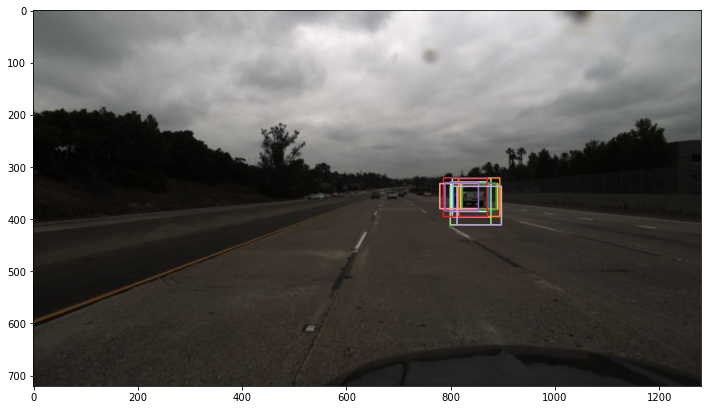
# Apply Non-Maximum-Selection
nms_threshold = 0.5
rclasses_nms, rscores_nms, rbboxes_nms = bboxes_nms_intersection_avg(rclasses, rscores, rbboxes, threshold=nms_threshold)
output_bbox = bboxes_convert(img, rbboxes_nms)
focal_length = (714.1526 + 710.3725) / 2
real_width = 2.154184483121644
cx = 713.85
tmp_x = []
tmp_y = []
for bbox in output_bbox:
x1 = float(bbox[0][0])
y1 = float(bbox[0][1])
x2 = float(bbox[1][0])
y2 = float(bbox[1][1])
pixel_width = x2 - x1
avg = (x1 + x2) / 2
distance = focal_length * real_width / pixel_width
offset = distance * (avg - cx) / focal_length
tmp_x.append(distance)
tmp_y.append(offset)
# Draw bboxes
img_bboxes = np.copy(img)
draw_position(img_bboxes, tmp_x, tmp_y, rbboxes_nms, colors_tableau, thickness=4)
plot_image(img_bboxes, (10, 10))
plt.axis('off')
# plt.savefig('output.jpg')
(-0.5, 1279.5, 719.5, -0.5)

for i in [1,2,4,7,17,3,29,47,49]:
# Load a sample image.
# path = 'test_images/'
path = os.path.join("clips", str(i), "imgs/040.jpg")
img = mpimg.imread(path)
# plot_image(img, 'Original frame', (10, 10))
# SSD network on image.
rclasses, rscores, rbboxes = ssd_process_image(img, select_threshold=0.8)
# Draw bboxes of detected objects.
img_bboxes = np.copy(img)
bboxes_draw_on_img(img_bboxes, rscores, rbboxes, colors_tableau, thickness=2, show_text=False)
# plot_image(img_bboxes, 'Raw SSD network output: multiple detections.', (10, 10))
# Apply Non-Maximum-Selection
nms_threshold = 0.5
rclasses_nms, rscores_nms, rbboxes_nms = bboxes_nms_intersection_avg(rclasses, rscores, rbboxes, threshold=nms_threshold)
output_bbox = bboxes_convert(img, rbboxes_nms)
focal_length = (714.1526 + 710.3725) / 2 # average of fx and fy
real_width = 2.154184483121644 # We compute it using all of the annotations in the training dataset
cx = 713.85
tmp_x = []
tmp_y = []
for bbox in output_bbox:
x1 = float(bbox[0][0])
y1 = float(bbox[0][1])
x2 = float(bbox[1][0])
y2 = float(bbox[1][1])
pixel_width = x2 - x1
avg = (x1 + x2) / 2
distance = focal_length * real_width / pixel_width
offset = distance * (avg - cx) / focal_length
tmp_x.append(distance)
tmp_y.append(offset)
# Draw bboxes
img_bboxes = np.copy(img)
draw_position(img_bboxes, tmp_x, tmp_y, rbboxes_nms, colors_tableau, thickness=4)
plot_image(img_bboxes, (10, 10))
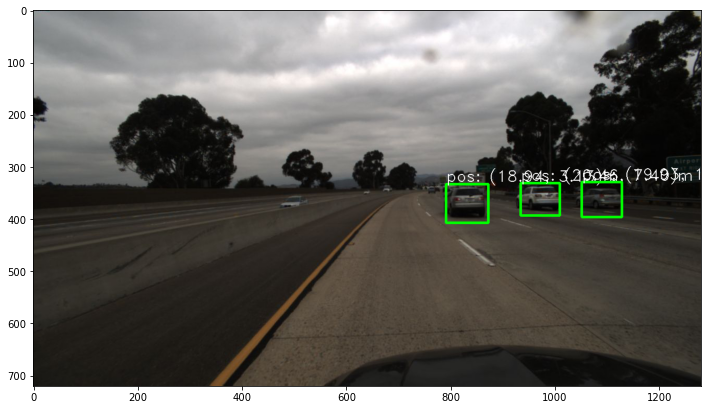
 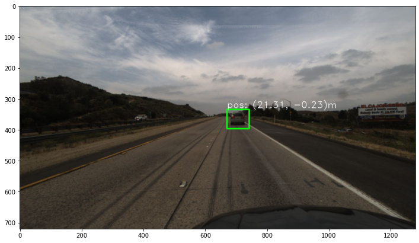
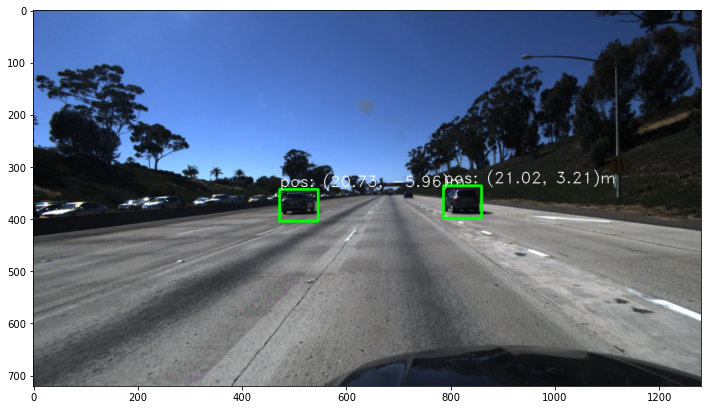
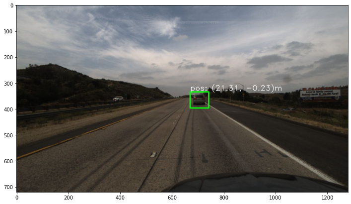
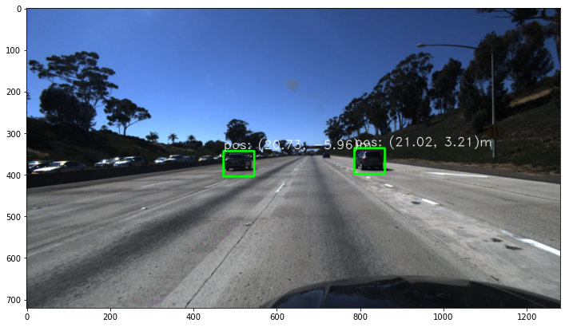
 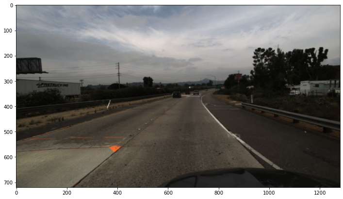
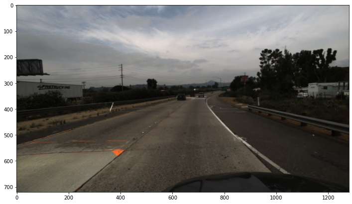
 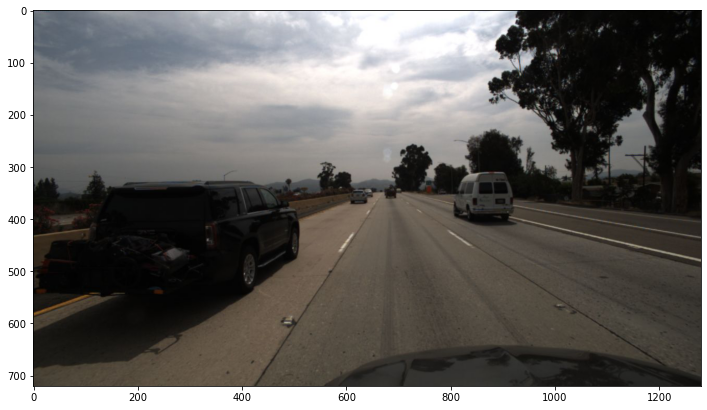
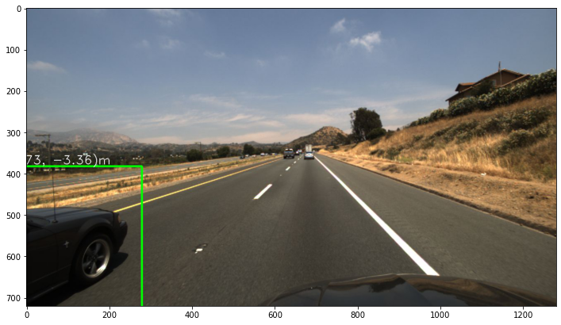
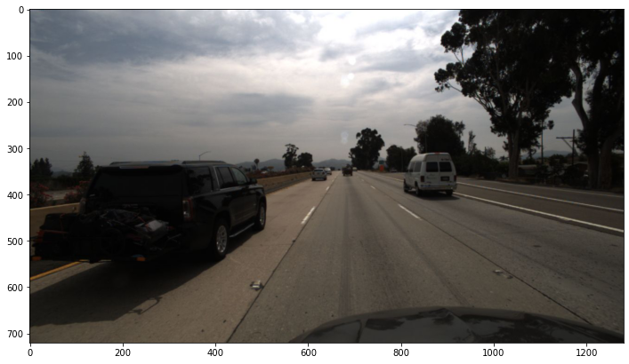
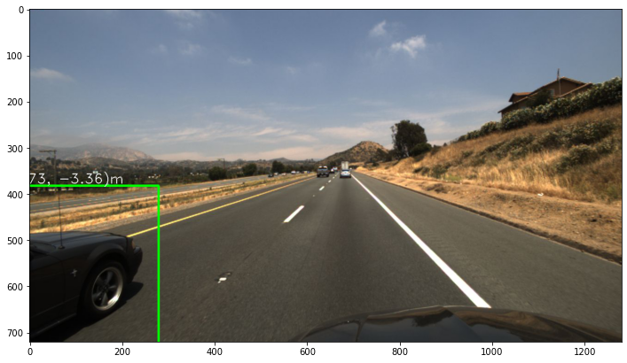
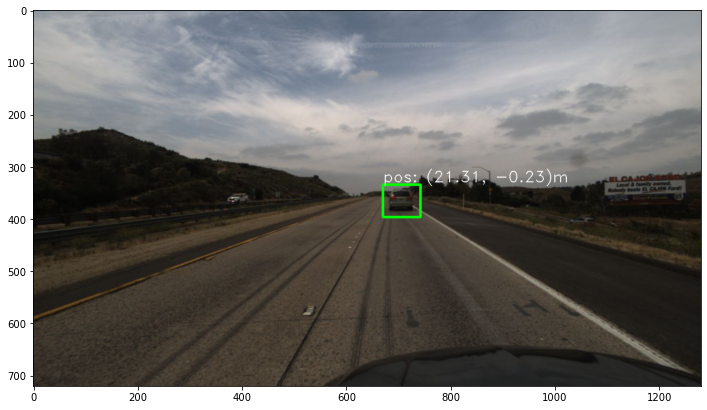
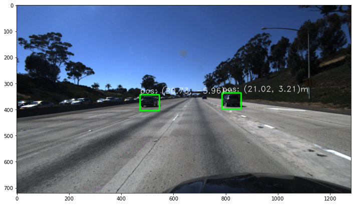
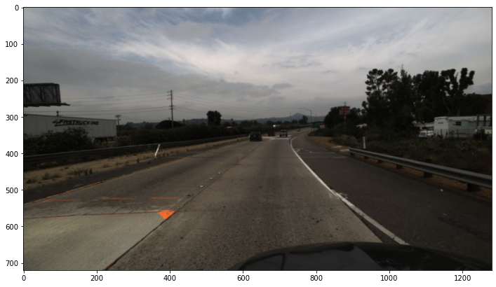
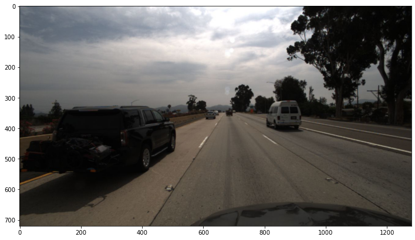
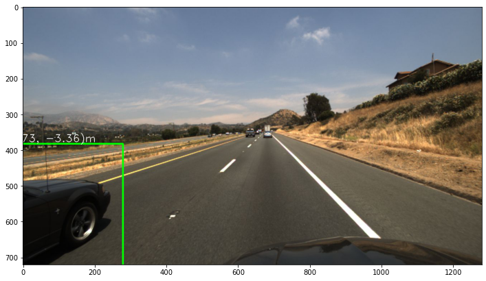
def get_position(num):
json_path = os.path.join("clips", str(num), "annotation.json")
strList = json.load(open(json_path))
output = []
for i in range(0,len(strList)):
position = strList[i].get('position')
position_x = position[0]
position_y = position[1]
bbox = strList[i].get('bbox')
y1 = float(bbox.get('top'))
x2 = float(bbox.get('right'))
y2 = float(bbox.get('bottom'))
x1 = float(bbox.get('left'))
w1 = x2 - x1
h1 = y2 - y1
output.append([x1, y1, w1, h1, position_x, position_y])
return output
def get_the_average_width(num):
json_path = os.path.join("clips", str(num), "annotation.json")
strList = json.load(open(json_path))
bbox = strList[0].get('bbox')
y1 = float(bbox.get('top'))
x2 = float(bbox.get('right'))
y2 = float(bbox.get('bottom'))
x1 = float(bbox.get('left'))
width = x2 - x1
position = strList[0].get('position')
distance = position[0]
return width, distance
focal_length = (714.1526 + 710.3725) / 2
summ = 0
for i in range(1,1075):
width, distance = get_the_average_width(i)
real_width = distance * width / focal_length
summ += real_width
real_width = summ/1074
print("The average real width of the vehicles in the training dataset is",real_width)
The average real width of the vehicles in the training dataset is 2.154184483121644
Evaluation¶
Evaluate the results by comparing the output position value with the position value in the annotations. We can get the mean absolute error of the distance.
It performs well on most of images. However, there is still room for improvement.
Future improvement
·In the case of bad light, some vehicles cannot be detected.
·Sometimes, the bounding boxes are a bit too large, resulting in inaccurate measurement of the distance
·We only consider the width of the vehicles, but actually in the images, Some cars were photographed sideways.
sum_x = 0
sum_y = 0
length = 0
no_detection = 0
output = []
real_width = 2.154184483121644
# real_width = 1.8
focal_length = (714.1526 + 710.3725) / 2
cx = 713.85
for i in range(1,1075):
gt = get_position(i)
path = os.path.join("clips", str(i), "imgs/040.jpg")
img = mpimg.imread(path)
# SSD network on image.
rclasses, rscores, rbboxes = ssd_process_image(img, select_threshold=0.8)
# Draw bboxes of detected objects.
img_bboxes = np.copy(img)
bboxes_draw_on_img(img_bboxes, rscores, rbboxes, colors_tableau, thickness=2, show_text=False)
# Apply Non-Maximum-Selection
nms_threshold = 0.5
rclasses_nms, rscores_nms, rbboxes_nms = bboxes_nms_intersection_avg(rclasses, rscores, rbboxes, threshold=nms_threshold)
# Get the bbox value
output_bbox = bboxes_convert(img, rbboxes_nms)
for x0,y0,w0,h0,position_x, position_y in gt:
tmp_x = []
tmp_y = []
if len(output_bbox) > 0:
for bbox in output_bbox:
x1 = float(bbox[0][0])
y1 = float(bbox[0][1])
x2 = float(bbox[1][0])
y2 = float(bbox[1][1])
w = x2 - x1
h = y2 - y1
x3 = max(x0,x1)
y3 = max(y0,y1)
x4 = min(x0+w0,x1+w)
y4 = min(y0+h0,y1+h)
if x3 >= x4 or y3 >= y4:
continue
else:
pixel_width = x2 - x1
avg = (x1 + x2) / 2
distance = focal_length * real_width / pixel_width
offset = distance * (avg - cx) / focal_length
x = np.abs(distance - position_x)
y = np.abs(offset - position_y)
# tmp_x.append(x)
# tmp_y.append(y)
length += 1
sum_y += y
sum_x += x
else:
no_detection += 1
print("Mean absolute error depth:", sum_x/length)
print("Mean absolute error horizontal displacement:", sum_y/length)
print("No vehicle detected images:",no_detection)
Mean absolute error depth: 7.964742459359323
Mean absolute error horizontal displacement: 0.8507224104033045
No vehicle detected images: 71